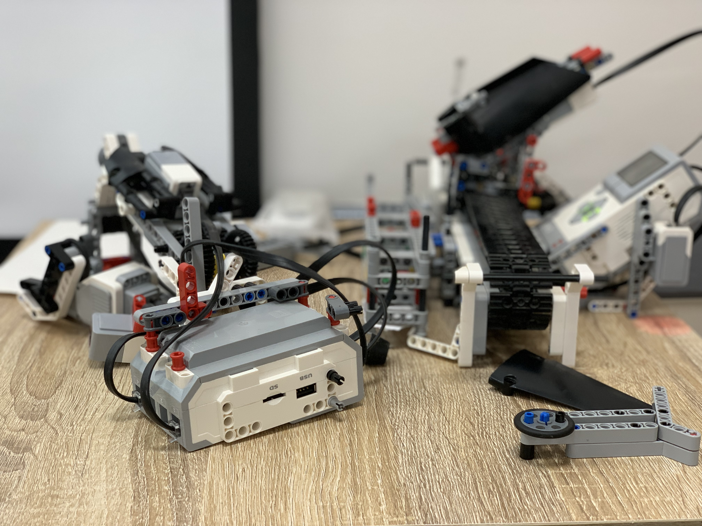
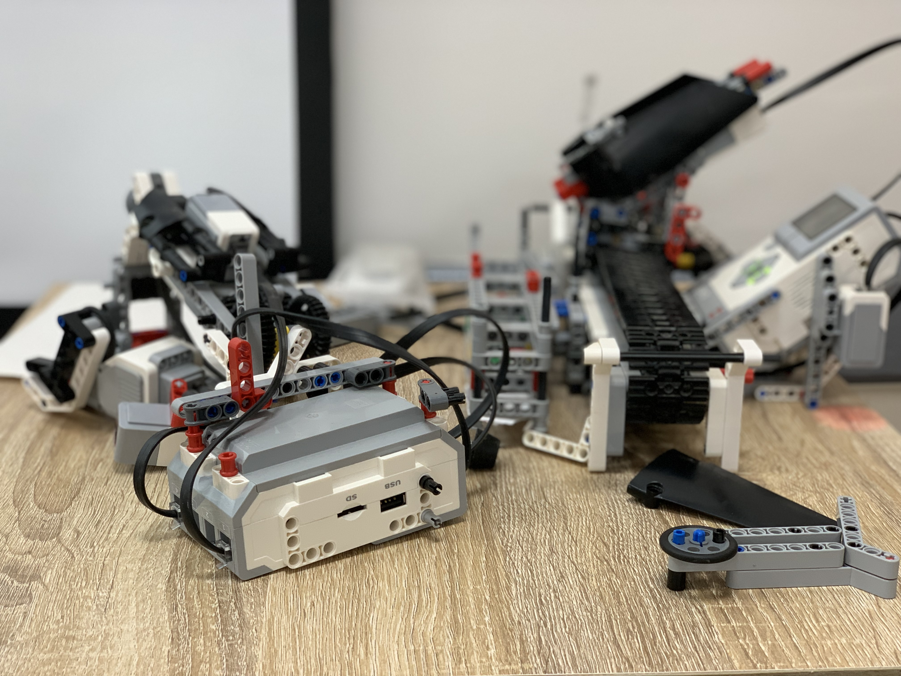

Information Technology(IT)
Information Technology(IT)
Technology (IT) is a field that involves the use of computers , software , and networks to manage , process , and transmit information. It encompasses a wide range of technologies and applications , such as hardware , software , databases , networks , and the Internet , and it is used to solve various business , scientific , and engineering problems.
Common examples of information technology include computer hardware (such as desktops, laptops, and servers), software applications (such as productivity software, operating systems, and games), data storage devices (such as hard drives and flash drives), networks (such as LANs, WANs, and the Internet), and mobile devices (such as smartphones and tablets).
Information technology is a rapidly evolving field, and its applications continue to grow and expand. IT professionals are responsible for designing, implementing, and maintaining the technology systems that support organizations and individuals in their daily activities. They are also involved in the development of new technologies and the creation of innovative solutions to complex problems.
The Department of Information Technology at our university is one of the best departments in Egypt , and the department offers various study programs in the fields of information technology and computing , including language programming ,database mangment , systems design , all specialties of networks , cybersecurity , and artificial intelligence.
The academic programs offered by the department include bachelor's degrees in the fields of information technology and computing. These programs aim to provide students with the skills necessary to develop and design computer applications and computer systems.
The department is characterized by the employment of distinguished and highly experienced professors and researchers in the field of information technology. Students are also provided with opportunities to interact with the industrial community through summer training programs, practical training and partnerships with major companies in the field of information technology.
The educational programs help students develop basic information technology knowledge and skills that prepare them for work in industry and academic research.
The program promotes collaboration and teamwork among students and teaches them how to communicate with different teams to complete projects successfully.
Students learn how to analyze problems and make appropriate decisions in information technology based on ethical and legal standards.
The program teaches students that they must be willing to learn and develop their skills throughout their careers to keep up with the rapid developments in information technology.
Information Technology students can design and develop websites using different programming languages such as HTML, CSS, and JavaScript.
Information Technology students can manage and design databases using various programs such as SQL Server, Oracle, and MySQL.
Information Technology students can manage, design, secure and maintain computer networks.
An IT student can design and develop mobile applications using different programming languages such as Java, Swift, and Kotlin.
The student of the Information Technology Department can secure systems and websites and maintain the integrity of data using modern technologies in cybersecurity.
The ability to think analytically and creatively.
Network Design
Network Engineering
Network Security
Network Design: This involves designing and implementing computer networks for businesses, organizations or individuals. Network design requires knowledge of network topology, security, scalability, and performance optimization.
Network Engineering: This involves designing, building, and testing network infrastructure, including hardware, software, and communication protocols. Network engineers may also be involved in the development of new network technologies.
Network Security: This specialty involves protecting computer networks from unauthorized access, hacking, and other security threats. Network security professionals use a variety of tools and techniques to prevent, detect, and respond to security breaches.
web development
database mangment
programming language
Web Development: Learn web development technologies like HTML, CSS, and JavaScript. Also, learn web frameworks like React, Angular, or Vue.js.
Database Management: In software development, database management involves organizing, storing, retrieving, and managing data. One of the most important key points is SQL,is the basis for working with databases and allows data manipulation in relational databases. An understanding of database design principles is critical to creating efficient and scalable database systems.
programming language:Start by learning a programming language such as Python or Java. You can start with basic concepts like variables, data types, and control structures.
Network laboratory: This type of laboratory is designed to provide students or researchers with hands-on experience in designing, building, and managing computer networks.
Software engineering laboratory: A software engineering laboratory is used to teach and research software engineering principles, such as software design, development, and testing.
Mobile computing laboratory: A mobile computing laboratory is used to research and develop mobile applications and services, as well as to study the design and performance of mobile devices and networks.
 
